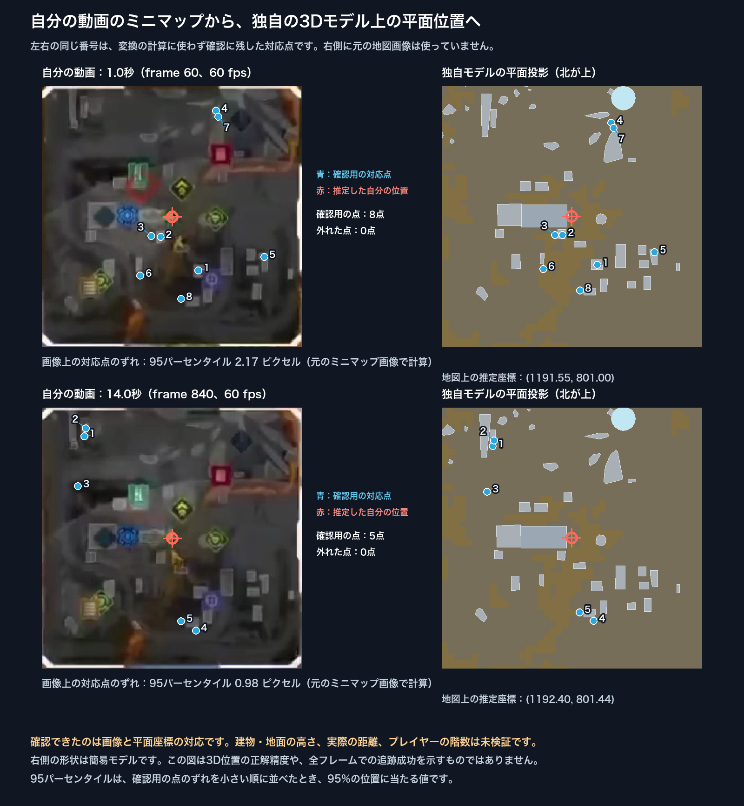

3D FIGHT REPLAY · 2026-10-18
World’s Edge全体を、
ミニマップと同じ座標で見る
Season 17の配置を基準に、マップ全体の地面、岩稜、建物の大まかな形をデータにしました。ミニマップから求めた自分の平面位置を、同じ3Dモデルへ表示できます。
これは全体構造を確認するための粗いモデルです。地図上の輪郭を土台にしていますが、高さや建物の寸法は未測定の仮定です。敵の正確な位置や、被弾を避けられる遮蔽を検証できた段階ではありません。
12秒のレビュー動画
全景、真上、塔、渡り通路を順に確認できます。水色の点は平面位置だけを示し、敵は座標が不明なため配置していません。
3Dモデルを確認する
読み込み中です。
水色の点は、照合に成功し、確認用の目印に外れがなかった1秒・14秒だけ表示します。点の高さは見やすくするための設定で、自分が立っている階を示しません。この素材には編集や同じ戦闘の繰り返しがあるため、スライダーは素材ファイル内の時刻です。失敗区間を移動軌跡として補間していません。

ミニマップを、全体モデルへ照合した結果
ミニマップと全体地図で同じ建物などの目印を探し、回転・拡大率・位置のずれを計算します。計算に使わなかった別の目印を照合し、位置が合っているかを確認しました。ここでいう「ピクセル」はミニマップ画像の1画素で、ゲーム内のメートルとは異なります。
| 確認項目 | 結果 | 意味 |
|---|---|---|
| 自動照合 | 49時刻のうち7時刻を受理 | 推定不能は85.7%。連続追跡には不足しています。 |
| 確認用の目印に外れがない時刻 | 1秒と14秒 | 95%のずれは約2.17 / 0.98ピクセル。同じ戦闘付近の2時刻であり、全域の精度保証ではありません。 |
| 残る受理5時刻 | 一部の目印に誤対応あり | 支持率の条件は通りますが、外れ点を含むずれをデータに残しています。 |
| 別の版の地図との照合 | MU5を使う9時刻は全て棄却 | 地図の版を揃える必要があります。全ての誤照合を防げる証明ではありません。 |
| 高さ・メートル精度 | 未検証 | 正解座標がないため、実ゲーム上の距離誤差は測れていません。 |
地図と動画をどう使い分けたか
平面の位置関係にはWorld’s Edge MU4の地図を使いました。岩域は茶色の領域、建物は明るい屋根の輪郭から候補を抽出しています。動画は、塔、段差、橋などの立体構造を確認するために使いました。画像の色から正しい高さを復元したわけではありません。
MooreOverの約39分の地点別解説では、Epicenterの氷の尖塔、Lava Fissureの溶岩を跨ぐ橋、Launch Siteの円筒設備、Stacksの多階層の塔と渡り通路などを確認しました。競技映像と紹介映像が混在しているため、全編を同じ版の連続した散歩映像とは扱っていません。
| 構造 | 確認した場面 | モデルへの反映 |
|---|---|---|
| 塔・大型設備 | Epicenter 13:55、Launch Site 30:58 | 位置と種類を参考に簡略形状を追加。高さは仮定。 |
| 橋・高い床 | Lava Fissure 19:33、Stacks 35:36 | 地面から離れた床として作成。下の空間を設備の柱で埋めない構成。 |
| 岩稜と通路 | Trials 18:34、全景 37:02 | 地図の岩域に粗い起伏を付けた候補。岩の実際の高さは未測定。 |
| 博物館の地下 | Season 17紹介の2分以降 | 地下があることと、全域の地面モデルを区別。今回の全域モデルでは地下内部を再現していません。 |
地図参照：World’s Edge MU4。構造の補助資料：EAのSeason 17変更紹介、Respawnの制作紹介。第三者の原動画・地図テクスチャ・ゲームの3Dアセットは、この共有ページにコピーしていません。

モデルデータと、まだできていないこと
地面の範囲は全域を覆っています。岩稜65候補、屋根158候補、手動で追加した設備・橋29形状を含みます。ただし、地面を全域に作ったことと、建物を全て正しく再現したことは別です。暗い屋根の取りこぼしや、雪・岩を建物として拾う誤りも残ります。
座標の原点は全体地図の中心です。横方向と縦方向は地図ピクセル、高さも同じモデル単位で表します。メートルへの換算、各建物の階高、内部や地下、実際の衝突形状は未校正です。このモデルだけで「この遮蔽物なら被弾を防げた」と判断することはできません。
実用的な自動3D戦闘復元と遮蔽コーチングは、現時点ではNo-Goです。照合処理だけの合計時間は49時刻で約7.24秒でした。動画の読み込みや全体地図の準備時間は含みません。
次の検証では、複数の地点のミニマップを使って照合範囲を広げ、主な建物の輪郭と階層を人が確認します。その後、位置が分かるカメラから描いた合成映像で、カメラと敵の位置誤差を測ります。